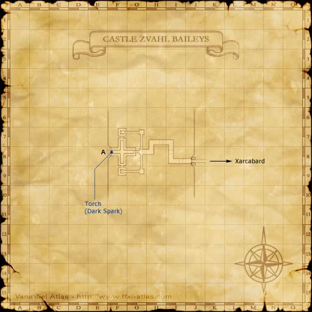
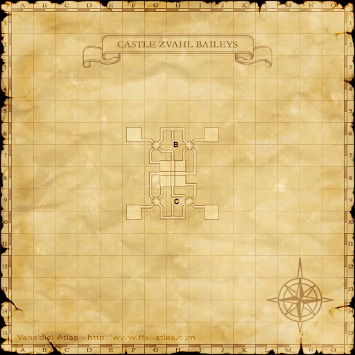

Before you begin
Be allied with Windurst, have Rank 5, and finish the preceding required story steps. Raise Rank Points if the mission is not offered.
Walkthrough
- Accept the mission and visit the Vestal Chamber.
- Travel through Xarcabard, Castle Zvahl Baileys and Castle Zvahl Keep to the Throne Room.
- Enter the Shadow Lord battle. In phase one, switch physical and magical damage as his immunities change; phase two requires sustained healing through area damage.
- After victory, enter Heavens Tower for the scene and visit the Vestal Chamber.
Important notes
- Bring both physical and magical damage options.
Locations and references
| Place / NPC | Location | Reference |
|---|---|---|
| Battlefield | Throne Room, through Castle Zvahl Keep | Location reference |
Completion and reward
Rank 6; 20,000 gil
Area maps
Open a zone below, then select a map to enlarge it. Match the named floors and grid coordinates in the steps; these are reference area maps, not a live position tracker.
Xarcabard


Castle Zvahl Baileys







Castle Zvahl Keep


Heavens Tower


References
HorizonXI Wiki: Windurst 5-2 · LandSandBoat mission definition
The route summary covers the original story. Other servers’ extra rewards, level-cap settings and Trust rules are not promises of Zenith behavior. Confirm battlefield entry conditions in game.
Additional level-75 reference
|
Walkthrough
- This mission will become available when your rank bar is 50%
- After accepting this mission, return to the Star Sibyl's chamber in Heavens Tower for a cutscene.
- Form a full level 50+ party and travel to Xarcabard and on to Castle Zvahl Baileys .
- Upon zoning into Castle Zvahl Baileys , go straight until you encounter the first intersection and make a left. Go down a small flight of stairs and then turn right and follow the left wall and you will enter the Orc section of the castle.
- Go through the area to the west again and eventually you will zone into Castle Zvahl Keep.
- Once you enter Castle Zvahl Keep, you will have to open several gates, very often in front of mobs that detect on sight.
- You will encounter a series of teleport devices. These devices will cancel the Invisible effect after they are used. Once you use the last device, run to the west exit of the map where you will find a zoneline to the Throne Room.
- When ready, gather in front of the door. When you enter, a cutscene will happen and the fight begins. Cast the prefight buffs before getting closer.
- This fight is level capped at level 75.
- The Shadow Lord has 2 forms. In the first form he will spam the Invincible move once he is at 50% health. Invincible does not protect him from magic.
- Once Shadow Lord starts spamming Invincible, mages need to nuke repeatedly and rest when melee are able to deal damage again.
- After the first form is defeated, a cutscene will appear. The second form will show up after the cutscene and does not wait for you to rest.
- This form of Shadow Lord will do nothing but a AOE attack but only has 4000 HP and should go down quickly.
- Melees should use their 2 hour abilities and Icarus Wing if possible to have TP for their best weaponskill. Mages should cast their Curaga spells.
- Since hate is irrelevant in this form, mages should feel free to spam spells.
- After this form is defeated, another cutscene occurs. Once the cutscene ends, you will be transported back to the enterance of Castle Zvahl Baileys. Here you will receive the Key Item Shadow Fragment.
- The Shadow Lord gives experience points for a Level 60 mob.
- Report back to Star Sibyl for another cutscene.
Game Description
- Mission Orders
- As written in the stars and interpreted by the Star Sibyl, you are to destined to journey to Castle Zvahl, which towers over Xarcabard, the end of the known lands. There, you are to witness what fate has in store for our world.
Adapted from Eden Wiki: The Shadow Awaits · Contributors and history · CC BY-SA 4.0. Revision 8576. Layout, links and optional background text adapted for Zenith.